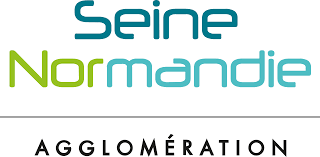
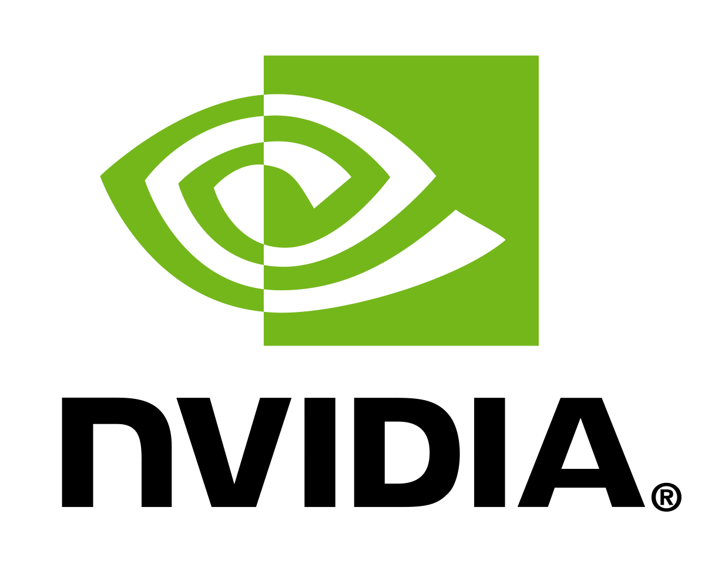

// Projets BTS SIO SLAM
Réalisations professionnelles
Portfolio des projets et compétences développées durant la formation BTS SIO SLAM.
B1.1 · B1.2 — Stage
Gestion d'incidents sous GLPI — SNA
Gestion de tickets d'incidents durant le stage via GLPI.
B1.1 · B1.2 · B1.5 — Formation
TP SQL
Description à compléter.

B1.3 · B1.4 · B1.5 — Stage
Site Annuaire interne — SNA
Site annuaire interne développé durant le stage pour remplacer les fichiers Excel de la collectivité.
B1.3 · B1.5 — Formation
Création du site CyberNews
Site de news cyber avec 2 articles par mois, fait en PHP/MySQL sur WampServer.
B1.6 — Personnel
Portfolio BTS SIO
Portfolio réalisé dans le cadre de ma formation BTS SIO.

B1.6 — Formation
Veille technologique — Hardware & Software
Suivi continu de l'actu hardware/software sur AMD, NVIDIA et Intel.